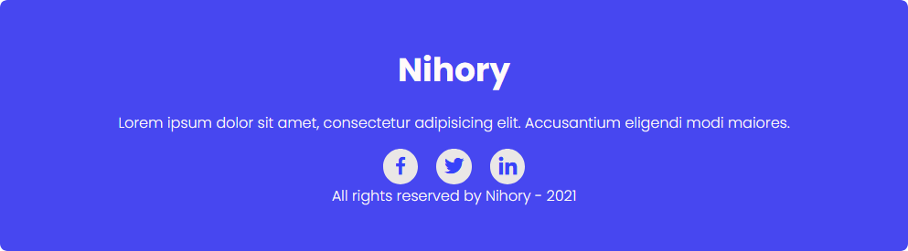

Nihory - Personal Portfolio Site Template
Introduction
üçª Thank you for purchasing Nihory website template. This documentation consists of several parts and covers the entire process of Updating and Changing your this website from root to roof.
Nihory is a creative personal/portfolio/CV/vCard/Resume website template. In about section of this template, you can show your lot's fo details like an engaging bio paragraph, contact info, years of experience, no of projects you have completes in your professional journey. You can display your skills with the progress bar in the skills section. And this template contains lot's of sections so can represent yourself in a better way like it has service section, professional journey timeline, highlighted call to action section, Recent work section where you can showcase your impressive projects to your clients and site visitors so they can't ignore your expertise level. imagine your some site visiter have eye problem to see a bright white screen for this type of situations we have added dark mode feature which helps you to don't lose your new client. One most important feature of this template, it has all necessary SEO tags which will help you to rank on Google without spending any extra dollar $ you just need to know a little bit of SEO, Don't sweat it don't know about SEO I have explained everything steps by step. The Nihory website template contains detailed documentation with code images, so you can quickly and easily create your own high-quality Personal website without losing your valuable time.
Features üßØ
üî• Clean and Professional Design
üî• 100% Responsive
üî• Mobile first
üî• Clean and commented code
üî• Favicon Included
üî• Loading Screen
üî• W3C Valid HTML5 & CSS3
üî• Free Fonts from Google Fonts
üî• Free Icons from Box Icons
üî• Crossover Browsers Compatibility
üî• Detailed documentation
üî• Easy Customization
üî• Blog Pages
üî• No Frameworks Only Core Languages
üî• Light/Dark Mode
üî• SEO Optimized
üî• Free Future Updates
üî• Working Contact Form
üéß Friendly 5 stars Support 24/7
Template Structure
SEO
SEO stands for Search engine optimization (SEO) in simple words this is the process of optimizing your online content OR website so that a search engine likes to show it as a top result for searches of a certain keyword.
Don't worry I'm not going to teach you and explain you the lengthy & boaring process of SEO. I will guide you in simple small steps of SEO which is enough for ranking on Browsers like Google, Bing and Firefox. So follow the steps and rank your portfolio site on #1 in browser.
Step 1
First of all we will work on website title, keywords and meta data. So for doing that open template folder and go to index.html file, now you will see something similar to this codes(i have made changes to show you as a example in code).
I this code you can see title tag, in this tag you have to write your main title like what is the main reason or perpose of your this website. I have written my website template category with his name. If you are going to use this template for your personal portfolio site, In that cas you can write in this format "Your Profession | your name".
Below that tag you can see meta tag for author you can write your name in double quote content="John Doe" like this.
After author tag next you will see meta tag for description="" tag in that double quote you have to give your brief Introduction like about you, your service and Profession.
The title tag data and description browser will show on web page like this. üëá
This SEO tagd is very important for ranking on serach engines and still you are confused about this, I recommend this video.
CSS Variables & Base Styling
In this Nihory personal portfolio template we have writen CSS code with some smart way like we have written CSS variable for lot's of things like color, font size, styling, etc. You can see the code below and in our CSS folder(style.css) and can change it according to your convenience. Our template is mobile first website template and in CSS file(style.css) first of all you can see code for smartphone device and then tablet & laptop. Everthing is well commented(read properly).
Navigation Sidebar
In our navigation sidebar we have our all menus with light/dark theme toggle switch. Which is responsively change to burger menu. you can make changes according to you in this navigation bar and if you find any issues you can simply contact me from support menu.
Home Section
In our home section we have a beatiful profile pic, Name, Profession, social icon and download button to download resume. You can make changes in this element's according to you and for download resume you have to put your PDF resume file in resume folder and want to put link in download tag like this. üëá
About Section

In about section Bio, your professional pic, contact info, years fo experience and numbers of projects. You can change this in our index.html file in about section and if you are struggling to scroll page so you can press CTRL + F to find anything in whole page. Everthing is well commented still if you find some issues you can simply contact me for support.
Expertise Area Section
In this eligent expertise area section you can showcase your skills with the help of progress bar it looks like a animated presentation.
Education Section
In this education section you can mention your current education in timeline format with start date & complition date along with University Name. You can make changes in this section and if you find any issues you can simply contact me from support section. I love üíù to hear from you.
Services Section
Oh yes, this is an another important service section because client want's to know that which service you'r providing to achieve his business goal. This section looks beautiful because it has on hover color change animation and grid of 6 services. You can also list any 3 numbers of services also but 6 services will looks more eligent.
Recent Work Section
In this section you can add your recent projects, I request you to add some beautiful projects snapshot which attract's human eyes. I have added dummy images but make sure you have added real project screenshots. Client will imagine his project in this section.
Contact Section
This contact form is working üéô yes client can contact you from this form. Basically when some one fills this form with proper details, the details will be send to you email id, which is listed in contact forms PHP code. Currently i have added my email ids, which you have to change.
Now to make those changes you have to open this file ( contactengine.php ) first of all template folder inside that open PHP folder in this directory you will find this file ( contactengine.php ).
Now you have to open this folder in any code editor if you don't have any code editor installed in you device, you can open it in any text editor notpad or something and you will see this codes.
üòä You don't have to worry about entire code, you just have to replace your first email from where you want to send email in line number 2 and your second email where you want to receive contact form content in line number 3. That's it but remember this contact form will work only on server not local computer. That's it for contact form let's know about contact details. In that section you can add your contact details like contact number, email and location.
Footer Section
In our footer section we can add our brand name, some paragraph text, Social media handels and copyright text.
Blog Page
This blog is Currently static page but some body who wants to write blog on his portfolio page this is the great option for those guys. They just want to hire some backend developer for this work. But you can use our only single page home only if you don't want blog pages etc. In future i will also launch wordpress version for this template follow on themeforest for update.
Trending Blog Section
In this section we can show our trending blog section on comment bases.
Blog Grid Section
Here we can showcase our blogs in grid in case we have lot's of blogs i have also added a pagination buttons here. everything is easy and static here but if you want any help you can simply contact me.
Single Blog page
This is our single blog page where we'll show our single blog content. First of all we have our blog image after that blog heading, Author detail and then have entire blog paragraph. If you know basic HTML and CSS you do it all very easily but if find issues you can contact me.
Comment form
This is our blog comment form where user or blog reader can comment there feedback and responce about respected blog. Currently this form is not working because our template is static website and comment form is totally backend work with other backend coding languages.
Related Blog Posts
This is our related blog section is similar to our current blog. that's it nothing new.
Comming soon page
Comming soon page, Basically this page is use when the site is not ready to use. In that case we can use this page to show the user instead of using broken pages.
404 Error page
This page is use on that time when links are broken or not available on server.
Friendly Support üéß
Atul Prajapati
Mumbai, India
Hi, I am a Creative Web Designer/Developer and E-commerce specialist üë®üèΩ‚Äçüíª Helping small and medium size businesses to grow online with my creative skills. I am in this field since last 4+ years so it would be great if i get a chance to prove myself to provide you with better quality service. I have experience working with local clients along with clients from all around the world.
I have made this Portfolio Website template for you so you can represent your self 24/7. Now if you are finding some issues in this template so can contact me, I love to solve your issues.